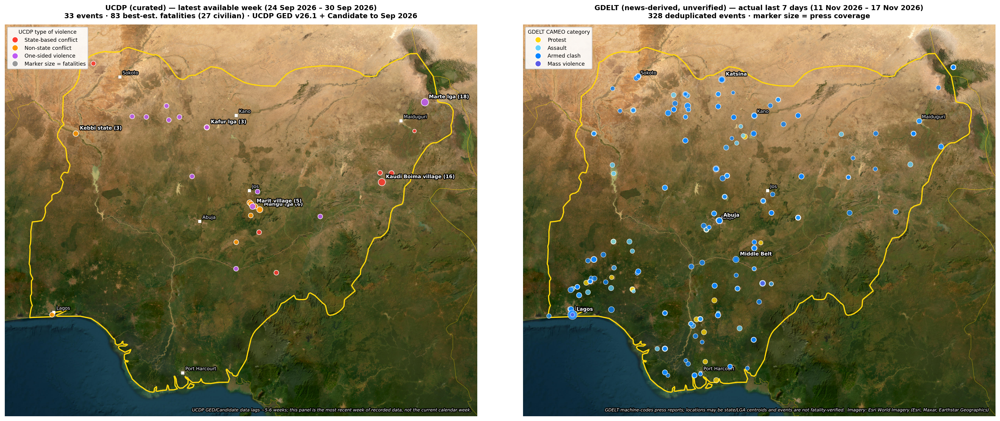

RBM GLOBAL · OPEN-SOURCE SECURITY AND HUMANITARIAN OVERVIEW
Nigeria - Weekly Threat Brief
Reporting window: 26 October 2026 to 1 November 2026. Issue date: 2 November 2026. Published: 19 November 2026. A selected, source-based review, not an exhaustive incident census. Source publication, event, reporting, issue and publication dates have different meanings.
AI-generated, source-checked overview. Automated review does not replace independent field verification.
Overview
This brief presents selected incident reporting, not a national incident inventory. Uneven evidence prevents comparisons of security conditions across zones or conclusions about changes since the previous issue.
Reviewed developments
Students and teacher reportedly abducted in Niger
Reported: Channels Television reported that suspected attackers abducted 14 Islamiyya students and their teacher while they harvested maize in Tungan-Bako, Niger State. Police confirmed the incident and student count. The supplied account does not establish their subsequent release. [1]
Event window: 31 October 2026 to 31 October 2026. The reported abduction occurred within the window; the article appeared the following Tuesday.
Coverage and confidence
| Zone | Selected coverage and interpretation |
|---|---|
| North East | Insufficient assessed evidence for a substantive regional update. No separately verified development selected. This does not establish absence of incidents. |
| North Central | The development above does not establish conditions across the wider zone. |
| North West | Regional coverage remains incomplete; no comprehensive assessment is offered. No separately verified development selected. This does not establish absence of incidents. |
| South East | Insufficient assessed evidence for a substantive regional update. No separately verified development selected. This does not establish absence of incidents. |
| South West | Reported: Premium Times reported an in-window Friday confrontation in Ado-Ekiti. Omoyele Sowore alleged an armed attack; police described an altercation and denied kidnapping. The competing accounts remain unresolved in the supplied report. [2] |
| South South | Insufficient assessed evidence for a substantive regional update. No separately verified development selected. This does not establish absence of incidents. |
Map and data status

UCDP: 2,239 curated conflict-event records in the complete captured map, dated 1 November 2024 to 30 September 2026. The image panel covers 24 September 2026 to 30 September 2026. UCDP is delayed and subject to revision; it is not a current-week census. This image panel differs from the brief reporting week.
GDELT: 2,801 machine-coded reporting records in the complete captured map, dated 23 September 2026 to 17 November 2026. The image panel covers 11 November 2026 to 17 November 2026. Daily input coverage is complete from 23 September 2026 through 17 November 2026; the maximum matching event date is 17 November 2026. These dates are not interchangeable. This image panel differs from the brief reporting week.
GDELT reporting volume is not a verified incident count, casualty count or opinion poll. The UCDP and GDELT panels must not be added or treated as comparable trends.
Map snapshot generated 2026-11-18T19:27:38.398672Z. The captured map and its original windows are retained with this issue.
Humanitarian context
This review cannot quantify displacement, assistance access or unmet needs. Incident accounts alone are insufficient for a humanitarian needs assessment.
Limitations
Reported claims are not independently verified here. Coverage gaps do not imply an absence of incidents. Publication timing is distinguished from event timing.
Sources
- Channels Television | 3 November 2026: Terrorists Abduct 14 Students, Teacher In Niger Community
- Premium Times | 30 October 2026: Sowore, Ekiti police give conflicting accounts of alleged attack on AAC presidential candidate